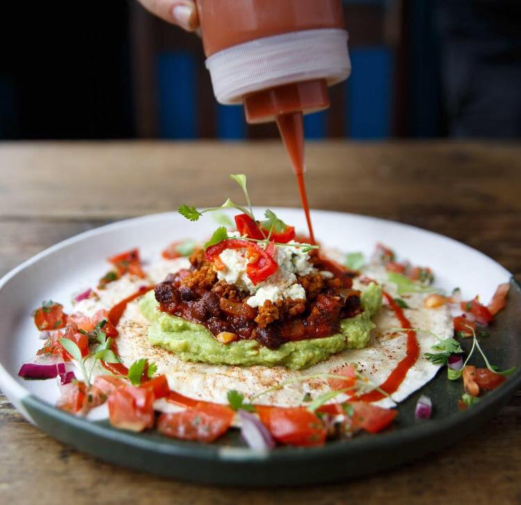
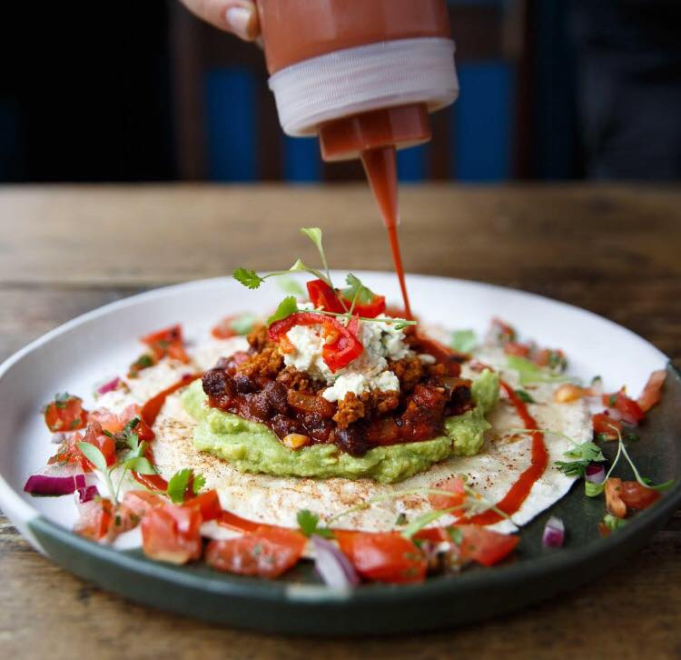

Food Stalls
We have the perfect winter street food market with all your winter favourites and world cusines. Our selected award winning vendors have been part of some of London's best markets including KERB London, Borough Market, Dinerama and Brixton Village and Market Row.
All food facilities will be take final orders 30 mins before park closure due to licencing reasons. All orders after this time will be denied.
Club Mexicana
This vegan stall has all your Mexican favourites. So if you're vegan or simply having a meat-free Monday Club Mexicana has got you covered.
Menu
MFC(Mexican Fried Chick'n Burrito (Ve)
Classic Nachos (Ve)
Fully Loadses Nachos (Ve)
Baja Tofishh Tacos (Ve)
 


Curry On Naanstop
Here you'll find authentic flavours from Mumbai to warm you up this winter. All options are full of spice, colour and flavour!
Menu
Chicken Dum Biryani
Samosa Chaat (Ve)
Vada Pav
Naan Wraps - Chicken tikka or Paneer
Glant Punjabi samosas
Up In My Grill
Get a taste of Argentina at this stall serving pink steak with a herby chimichurri and fries.
Menu
Rump Cap
Oregano Fries (Ve)
Steak Prego
Beef Shin Nuggets
Born and Raised
Born and Raised's delcious pizzas are cooked in a converted Land Rover, the wood fired ovens bring quality ingredients to the fore front with creative meaty, veggie or vegan combos.
Menu
Cobble Lane Smoked Ham and Mushroom
Cobble Lane Pepperoni
Rosary Goat's Cheese (V)
Portobello Mushrooms (V)
Plum Tomato (Ve)
Allergy Information
Please make us aware of an allergies before ordering. For allergy information please refer to our allergy information page.
Toilets
Our facilities are available are mapped and signposted. We have Male, Female, Unisex and Baby Changing facilities located at our front and rear entrances as well as adjacent to the food facilities.
Please approach staff if you need assistance with using our available facilities.
Opening Times
to
- Weekdays
- Weekends
Winter World on Twitter